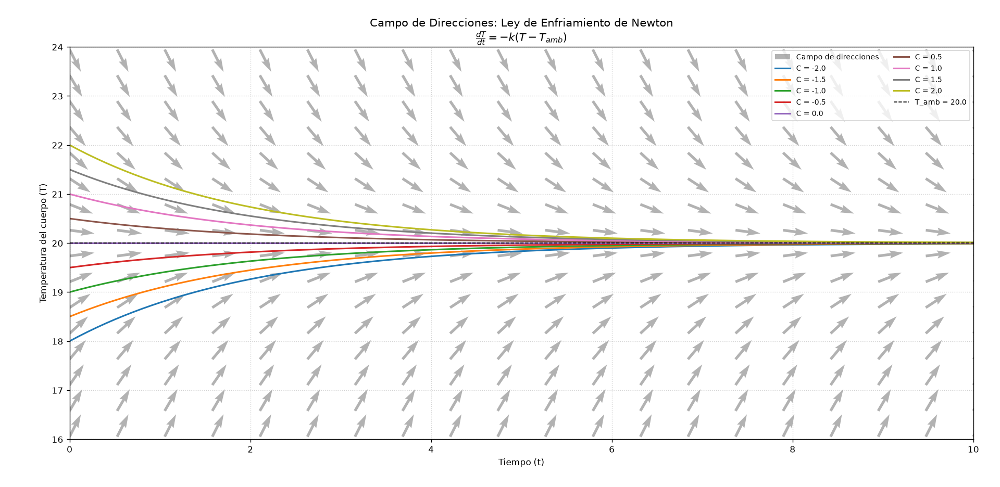
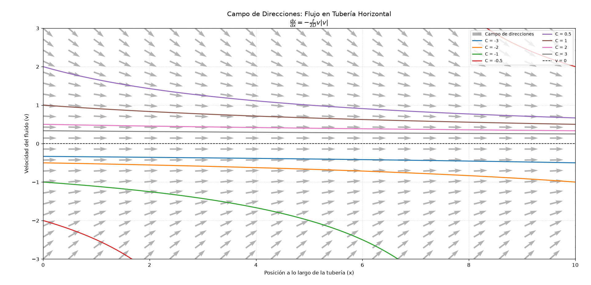
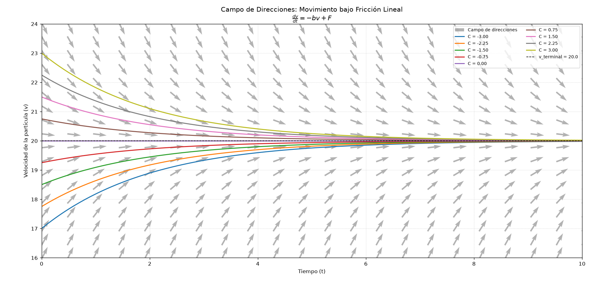
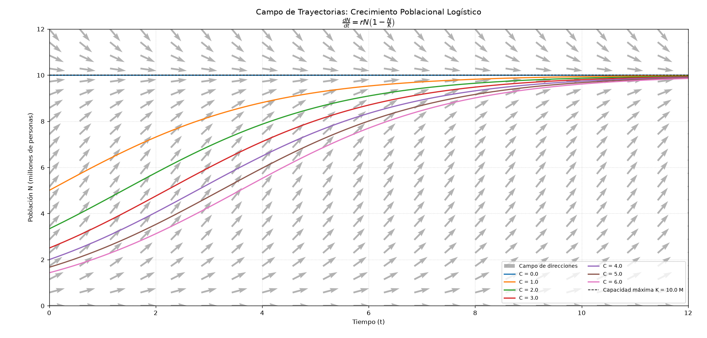

ACTIVIDAD 2.2.2.1
Representación gráfica y análisis de cuatro modelos mediante ecuaciones diferenciales.
Ver ejercicios ↓Un campo direccional es una representación gráfica que utiliza pequeños segmentos para mostrar la pendiente de las soluciones de una ecuación diferencial en diferentes puntos del plano.
Este modelo describe cómo cambia la temperatura de un cuerpo al intercambiar calor con el ambiente.
T: temperatura del cuerpo.
Tamb: temperatura ambiente.
k: constante de enfriamiento.
Cuando el cuerpo está más caliente que el ambiente, su temperatura disminuye progresivamente hasta aproximarse a la temperatura ambiental.

Esta ecuación representa el cambio de velocidad de un fluido que circula por una tubería horizontal, considerando el efecto de la fricción.
v: velocidad del fluido.
f: coeficiente de fricción.
D: diámetro de la tubería.
La fricción se opone al movimiento del fluido, provocando una variación en su velocidad.

Describe el movimiento de una partícula sometida a una fuerza constante y a una fuerza de fricción proporcional a su velocidad.
v: velocidad.
b: constante de fricción.
F: fuerza constante.
La velocidad tiende a estabilizarse cuando la fuerza aplicada y la fricción alcanzan un equilibrio.

Este modelo representa el crecimiento de una población considerando que los recursos del ambiente son limitados.
N: población.
r: tasa de crecimiento.
K: capacidad máxima.
La población aumenta y posteriormente se aproxima a un límite máximo determinado por la capacidad del entorno.

Los campos direccionales permiten comprender visualmente el comportamiento de diferentes ecuaciones diferenciales. Cada modelo representa un fenómeno distinto y muestra cómo evolucionan sus variables a través del tiempo o del espacio.